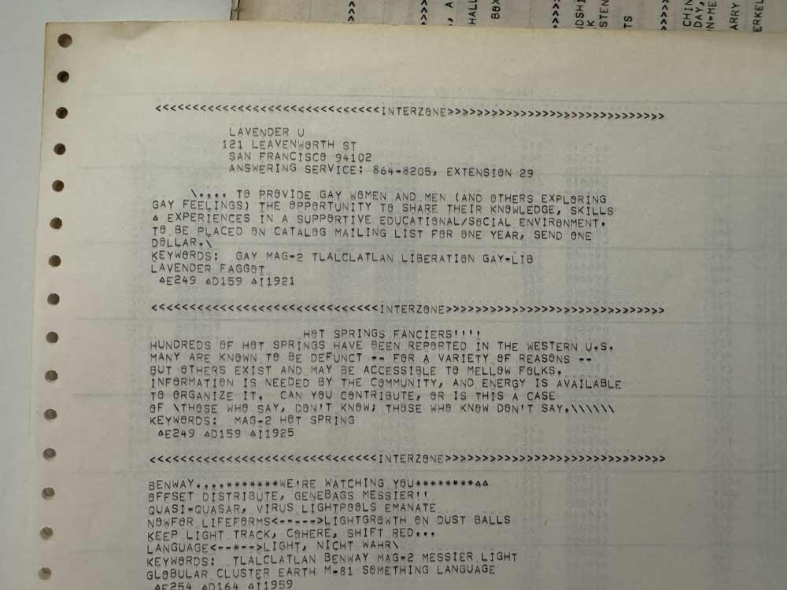
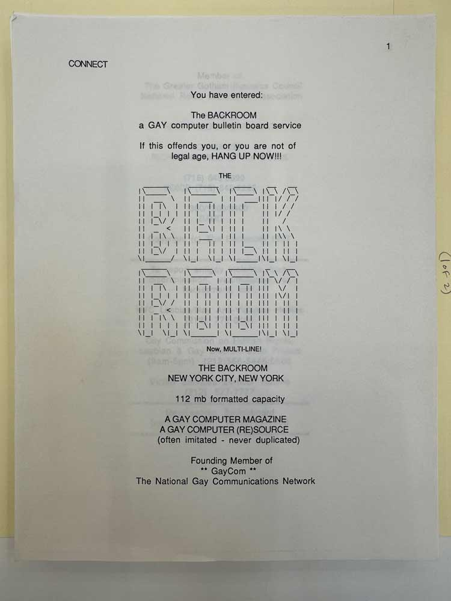
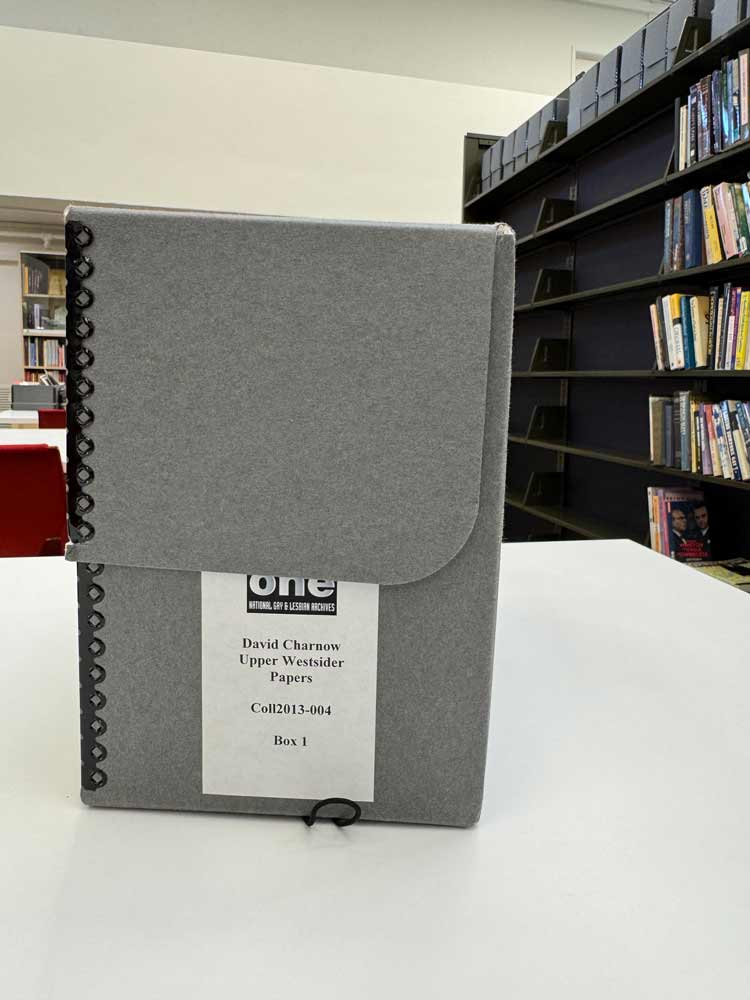
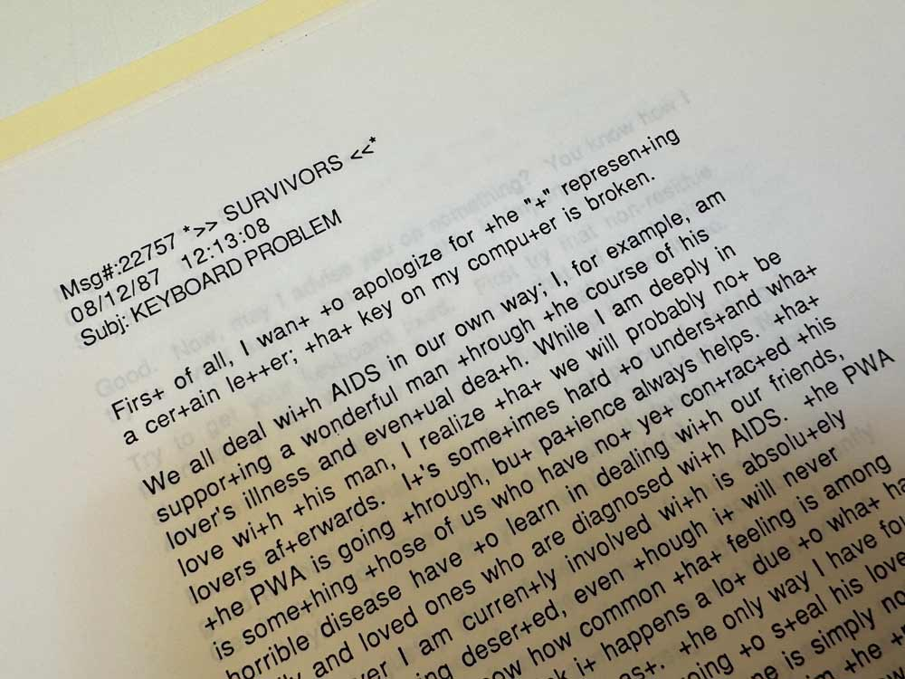
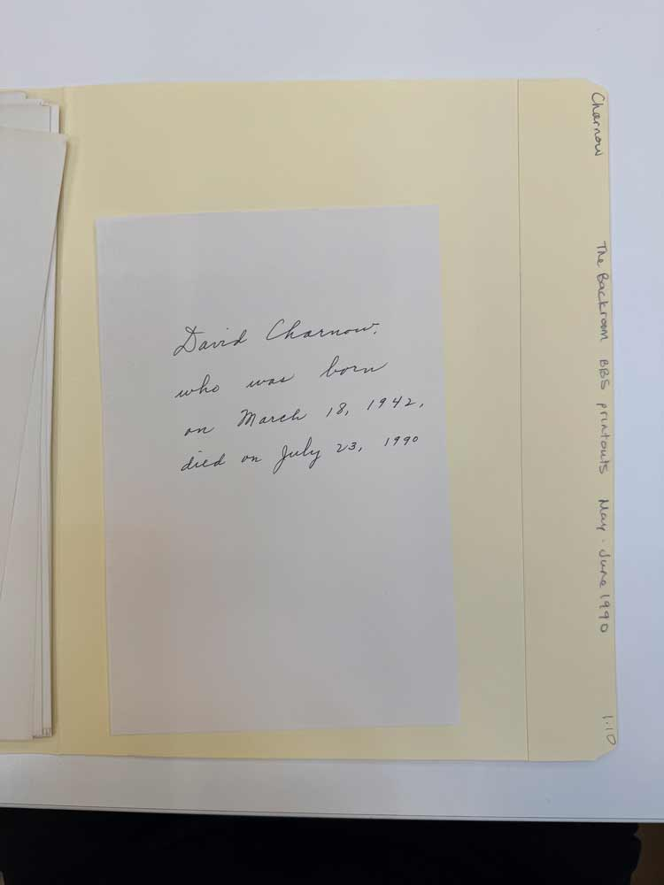

October 2024
Andrei Tarkovsky, Solaris (1972)
I’ve been thinking about queer ancestors both alive and dead. I’m searching for ways to be in communication with queer ancestors, to convene queer kinship across time and space. Queer timelines are always incomplete; our history is time interrupted, timelines erased, evidence neglected. Looking for queer ancestry means confronting silence, disease, necropolitics, failure, voids; this is part of what it means to work with history outside of heteronormative traditions of inheritance. Having lived through the violence and ruptures of queer life in the 1980s and 90s, I’m looking to repair some of the wounds that I carry with me.
Generated image, 2022
Recently, I was in an accident. I tripped while walking downhill, which caused me to fly headfirst into a stone wall. I broke 12 bones. For an unknown amount of time I lay on the sidewalk, unconscious in public, until I was found by someone who called for help. My body was brought closer to the end of my own timeline, if not quite all the way. I experienced a new, heightened awareness of the boundaries between bodies and timelines, and began to think about what it might mean to become an ancestor myself.
Generated images, 2022
From my hospital bed, I struggled to make sense of those moments of the accident that were outside my memory, and began feeding details of the event into a popular text-to-image generator to try and “reconstruct” the fall. I wanted to become an eyewitness to myself: an outside observer who could rewind time and play back the event, again and again.
Generated images, 2022
I eventually generated thousands of images, almost inadvertently assembling an archive. I hoped they might reveal an opening in my memory, somehow locating my absent body. I thought, foolishly perhaps, that they might show me what had really happened.
Generated image, 2023
The sensations of potential and repair proved quite addictive, and I soon started looking for other bodies, not just my own. I messaged the Midjourney bot on Discord, writing prompts for queer bodies, trans bodies, scenes of life in queer spaces.
Generated images, 2022
I asked for historical images of men in love, trans women, gay bodies embracing—queer images from times when social and technological constraints would have made such photographs difficult or impossible. The prompts felt like things I needed to see; but the images felt like things I’d seen before. Their bodies, styles, poses, the interactions of these characters and the spaces they inhabited—they reminded me of real archival artifacts.
Generated images, 2022
They also prompted recurring critical questions: why does it only generate white bodies, unless I ask it not to? Why does everyone look so similar?
Why do these scenes, never before seen, feel so familiar? Despite their occasional deformities and bodily hallucinations, they contained a weird capacity for stirring emotion. I was drawn to their seemingly bottomless potential for visualizing an absent queer history; as the images emerged from my prompts, I felt increasingly entangled with these fictional figures and narratives. Was I writing these stories, or were they emerging from somewhere beyond?
Generated images, 2022
Hito Steyerl calls these kinds of AI images produced without a camera “mean images,” that is, they form an approximation. You train the diffusion model with a vast photographic dataset and it returns averages, new images emerging from random noise. She says that these renderings represent “averaged versions of mass online booty.”
Generated images, 2022
It’s a very strange sensation to go looking for your own body like this, looking for yourself as an approximation emerging from a random database of bodily forms. I struggled with whether to print or publish these images, and debated their value and ethics with colleagues, but still I couldn’t stop generating.
Generated images, 2023
I questioned whether these images were truly reparative, or simply mirroring back my own desires as an older gay white man who wanted so badly to make contact with gay life before and during the HIV/AIDS crisis (another moment when I was also “unconscious in the street”). They seemed to show the story of queer life persisting and surviving through time, but when I looked into them deeply there was no one looking back. I had confused longing (wanting to belong) with a scopophilic desire to manufacture my ancestry, as if I could simply collage it all into being.
Found image, 2022
Later, while I was renovating my house in Providence, Rhode Island, a Polaroid photograph fell out of the ceiling. Until that moment it had somehow been in the floorboards of the house, between the first floor and the basement. The image depicted a young Black woman sitting at a banquette with six cocktail glasses on the table in front of her. She’s smiling and looks relaxed, arms open and outstretched to her sides. She appears alone except for a single mysterious bare leg stretched across the bottom of the frame. I was able to date the photostock to the 1970s. Where did it come from? Was it lost? Hidden? Had she lived here? What role had I played in exposing this picture? This old house, built in 1924, was an image generator, and I was the prompt.
Generated image and artifact, 2022
Other artifacts fell out from behind the fireplace when we removed the mantle. All together, the ad hoc collection appeared to be evidence of Black American family life in the 1970s, 80s, and 90s. I don’t have access to what’s happening in these images, but they remind me that my occupancy of this house comes with a responsibility to tend an ongoing social fabric of stories and lives, and that these past (and future) connections can sometimes be sensed, if not seen.

Found artifacts, 2022
My entanglement with the tender acts surrounding this Polaroid crossed the boundaries of time and space: the house had functioned like an archive, preserving evidence within its walls. I thought about the power of this one precarious image, sitting for decades, in relation to the thousands of images I had generated with AI, practically overnight.
Found artifact, 2022
My archive only referred to itself; meanwhile, neglected evidence of real life is to be found everywhere, hidden away in storage spaces both legitimate and makeshift. To be open to this kind of ephemera—what might even be considered trash—requires attention and labor, and the real possibility of entanglement. Archives are at once both time machines and dead ends, places where neglected evidence survives, out of view, “unconscious in the archive.”
This is my work now: turning my attention to bad, wayward archives outside of institutions, illegitimate collections where I can light up new circuits. I’m looking for porous openings where I can become entangled with these precarious moments of generosity and tenderness, which might connect us to future ways of living.
L. S. Alexander Gumby, 1950, Gumby scrapbook pages
While searching in an official archive recently, I encountered one of those openings: the story of L.S. Alexander Gumby, who opened Gumby’s Book Studio in 1926 at 2144 Fifth Avenue in Harlem, New York. Gumby was a gay Black man who documented African-American history by saving newspaper clippings, ticket stubs, artwork, event programs, letters, poetry, and other ephemera. He preserved his collection in carefully constructed scrapbooks, a kind of wayward publishing practice.
Gumby’s Book Studio in Harlem, Gumby scrapbook pages
Gumby would gather friends and strangers at the studio for salons, parties, and performances where he would share and discuss his work. There, in that queer space, Gumby’s Book Studio was a living archive, cared for by its creator but kept alive through the relationships that gathered around the artifacts. This was “queer materials in queer hands,” as archivist Ben Power has elsewhere stated.
Gumby scrapbook page featuring Maurice Hunter
Now, some of that material can be viewed online at Columbia University’s Rare Book & Manuscript Library, where Gumby left his collection of over 300 scrapbooks in 1950. Looking at some of the pages, I found one plainly titled “Your History,” the words cut from a headline, above a few snippets about Black inventors and performers; another page contains three striking photographs of Maurice Hunter, a Harlem-based performer and artists’ model. Networks of community memory continue to emerge from Gumby’s work.
Community Memory terminal at Leopold’s Records, Berkeley, 1973
In 1972, just twelve years after Gumby’s death, a project called Community Memory began in San Francisco. Community Memory was a mainframe computer located at the Project One commune, in the South of Market neighborhood, connected to a public terminal in Leopold’s Record Shop in Berkeley. Later, there were additional terminals. This was the very first public computerized bulletin board service, where anyone could sit, type, and post a message. This wasn’t quite yet the internet—it was a closed network—but it did foreshadow some of the functionality and many of the behaviors we associate with the early web.
Community Memory printout, 1974, photographed at Computer History Museum archive, Fremont, CA, 2024
Each individual post was tagged with keywords, enabling connections when the database was searched.

Resource One newsletter, 1974, photographed at Computer History Museum archive, Fremont, CA, 2024
Promotional material at the time stated that Community Memory was “community mindfulness, not-forgetfulness… it is communal retrieve of truth, communal disclosure, that which is (left) open, by us, to us.”

Community Memory printouts, 1974, photographed at Computer History Museum archive, Fremont, CA, 2024
Each week, all of the posts were printed out, forming a screen-to-print archive, which is now stored in the archives of the Computer History Museum in Fremont, CA. I recently visited this archive in person, specifically to see these printouts; I took all of these photographs. Reading through thousands of messages, I found a few posts that reference queer material.

Community Memory printout, 1974, photographed at Computer History Museum archive, Fremont, CA, 2024
One is for Lavender U, “to provide gay women and men (and others exploring gay feelings) the opportunity to share knowledge, skills, and experiences in a supportive educational/social environment.”

Community Memory printout, 1974, photographed at Computer History Museum archive, Fremont, CA, 2024
Another post is for East Bay Gay, “a non-profit community services organization,” and there’s one for Amazon Quarterly, a very early lesbian publication. This is 1973, only a few years after Stonewall. It’s possible that these are the first moments of queer community organizing and publishing on a digital platform, ever.

SURVIVORS printout, 1989, photographed at ONE Archives, Los Angeles, CA, 2024
Just over a decade later, in 1987, a PhD student at Columbia named David Charnow created an early online message board for people with HIV/AIDS called SURVIVORS. He learned that he was HIV positive just as he started the message board, which was a section of The Backroom, a very early gay digital bulletin board service.

SURVIVORS printout, 1989, photographed at ONE Archives, Los Angeles, CA, 2024
Charnow documented his struggles in his own posts, which he signed with his handle =UPPER WESTSIDER=. Charnow ran SURVIVORS as a queer survival network until July 1990, when he passed away from AIDS-related illnesses. One month before he died, he made a complete printout of all of the posts. That 1,000-page printout, now referred to as the SURVIVORS Printout, is stored today at the ONE Archives in Los Angeles. The story of the SURVIVORS printout was beautifully documented and analyzed in this text by Kat Brewster and Bo Ruberg in 2020, which is where I first learned about it.
SURVIVORS printout, 1989, photographed at ONE Archives, Los Angeles, CA, 2024
I decided to visit the printout this past August, and spent several hours examining and reading through it. Afterwards, I left the archive and just kind of broke down in the car. The emotional weight of the experience was extreme; it was a lot to process. I’m back in Los Angeles right now to spend more time with it, and other materials here at the ONE at USC, which is the largest LGBTQ archive in the world. The content of the SURVIVORS Printout is deeply moving and powerful in ways that you would expect, containing so many interconnected stories about illness, dying, and loss.
SURVIVORS printout storage folders, photographed at ONE Archives, Los Angeles, CA, 2024
But I think I was responding to something else as well. It had to do with the ephemerality of this artifact itself (the loose papers, the folders, the box), its minimal presence, its barely-there materiality. All of this was in stark contrast to the enormity of the world contained in the box. I was hit with a sharp awareness of time that I sensed as a loss in my own body. It was about being in proximity with this box, and it had to do with my own being and my own survival.

SURVIVORS printout storage box, photographed at ONE Archives, Los Angeles, CA, 2024
It was a realization that each of the posts contained in the SURVIVORS printout was a direct conduit to someone, all of these lives engaged and entangled with each other over a digital network that no longer exists. And that the authors’ actions at the keyboard—making these posts—is all that remains. This is what persists: the box with a thousand sheets of paper, documenting their queer acts of typing, which I was able to access only because of Charnow’s decision to print, and my eventual access to this archive. I felt connected to him and his decision, entangled through this fragile trajectory of papers ending up in this box at the ONE Archives.

SURVIVORS printout, 1989, photographed at ONE Archives, Los Angeles, CA, 2024
Within the hybrid digital/analog condition of the SURVIVORS printout as a media archeology, I found something else—a more emotionally fraught hybrid condition of being and existence, of being both there and not there. Handling the evidence with my own hands was a full, connected experience that I felt deeply in my body,

Artifact found in SURVIVORS printout folder, photographed at ONE Archives, Los Angeles, CA, 2024
as it positioned me directly in front of major gaps in the timeline: the loss of lives and histories stopped short, neglected, forgotten, of course, but also—the loss of my own experience of that crisis. I was alive throughout the HIV/AIDS crisis but “unconscious in the street,” frightened, alone, and turning away from it as part of my own survival. I’m reckoning with that now.
Marika Cifor, “Presence, Absence, and Victoria’s Hair,” 2015
In “Presence, Absence, and Victoria’s Hair” (2015), Marika Cifor writes that “archives offer the possibility of survival.” Cifor is describing an encounter they had with a single human hair in an archive during their own research. The hair likely belonged to Victoria Schneider, a trans woman, sex worker, and activist. Cifor finds the single hair on a lipstick in the collection.
Cifor writes this: that such an encounter “closes some of the distance between objects and the lives they represent, bringing together bodies to build identities, stories, and futures for themselves, while maintaining space for possibility and keeping subjects in time differently.” Cifor writes that the stakes of such an embrace are high, and that the central question for archives is “how the past that emerges from them ‘can potentially produce a revelatory historical conscious of the present’ that is so desperately needed.”
First ever photograph of entangled photons, University of Glasgow (2019)
In quantum physics, entanglement is what happens when one particle can’t be described independently of the state of another. The correlation between them persists through time and space, even across large distances. Einstein famously described this as “spooky action at a distance.” It can only be explained by the smallest units of energy behaving weirdly, according to rules that seem to go against the most commonly understood paradigms of time, space, and gravity. I’ve always suspected that queer kinship might also operate like this, through heightened forms of entanglement.
First ever photograph of entangled photons, University of Glasgow (2019), Diagram: Karen Barad, “Troubling Time/s and Ecologies of Nothingness,” (2017), p.67
We exist, after all, in opposition to straight, linear time. Queer time stops, reverses, and starts again; it skips and repeats; it resists the patterns and routines of conventional chronological structures. Here’s my wish: that within queer time’s failure to plod along linearly, predictably and logically, we might discover shared moments that cohere across large temporal distances. In those shared moments, bodies—and queer kinship—can be found.
Elizabeth Freeman writes that the wish for physical contact across time “demands and enacts formal strategies and political stances worth taking seriously… [and] this longing produces modes of both belonging and ‘being long,’ or persisting over time.” It’s this &Ldquo;being long” and persistence over time that I’m after here: a longing for the circuitry that lights up large expanses of the timeline where queer family convenes, always both here and there, past (passed) and present.
In a quantum approach to queer history, my own unconscious body in the street and the queers posting to the Community Memory terminal and the woman in the Polaroid that fell from my ceiling and Alexander Gumby’s Book Studio and scrapbooks and =UPPER WESTSIDER= all exist together in the same collage, as I’ve assembled them here, both alive and dead, in combined moments of generous and tender “survival by sharing” across many decades. Unable to actually observe these queer acts of care in lived time, I can convene them now in queer time as survival networks that persist because of our own interference, open and searching in the archive, extending our own bodies across time and space (&Ldquo;being long”). This entanglement in the archives might produce a revelation, of sorts. This entanglement itself is a kind of care and healing, making space for survival as we move towards future worlds.